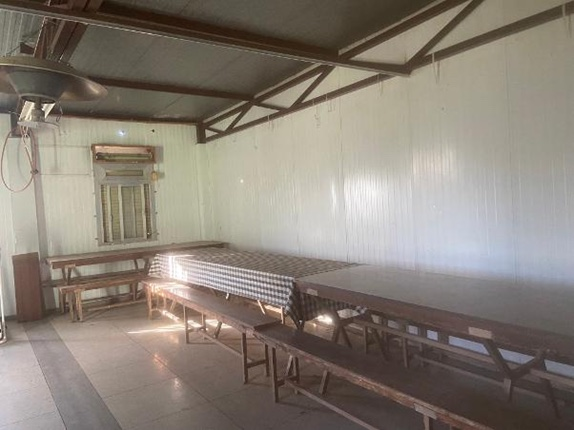

Einzelresidenzen
„Ich komme, um mein Projekt zu entwickeln“
Einzelaufenthalte in den 5 Apartments.
Sie können direkt gebucht werden.
Ein Rückzugsort in der Horta de Lleida,
um zuzuhören, zu schaffen und zu sein.
Wir leben in einer Welt, die sich zu schnell dreht. Und manchmal brauchen wir nur Zeit und Stille.
Der Verein Amics de la Natura öffnet die Türen von Les Vaqueres, einem Ort für Konzentration, Kreativität und Wohlbefinden mitten in der Natur.
Fünf einladende, eigenständige Apartments (eines davon vollständig barrierefrei) in der ruhigen Landschaft der Horta de Lleida, wo das Abendlicht und der Rhythmus des Landes den Takt vorgeben.

Hier sind Sie richtig.
Ein Ort zum Ausruhen.
Eine Atempause für den Kopf.
Ein Ort, an dem die Natur Ihnen Gesellschaft leistet.
Künstlerinnen und Künstler werden gebeten:
Die Künstlerinnen und Künstler zeigen eine Probe des Ergebnisses.
Man muss nicht mit einem fertigen Werk anreisen.
Ziel ist es, die Residenz mit der Horta und dem Land ringsum zu verbinden.
Der Alltag ist Teil der Residenz. Ein gemeinsames Haus erlaubt einen eigenen Raum und zugleich den Kontakt zu den anderen.

Alle können sich auf ihr eigenes Projekt konzentrieren, aber auch einen Teil ihres Prozesses mit den anderen Residenten teilen.
So können Residenzkünstlerinnen und -künstler, die das möchten, Aktivitäten, Treffen oder Workshops zu ihrer Praxis vorschlagen oder sie auch für Kunstschaffende und Menschen aus der Gegend öffnen.
„Ich komme, um mein Projekt zu entwickeln“
Einzelaufenthalte in den 5 Apartments.
Sie können direkt gebucht werden.
„Ich komme, um mein Projekt in einer Gruppe von Kreativen zu entwickeln, die ein Thema, eine Disziplin oder eine Herausforderung teilen“
Ein gemeinsamer Raum zum Schaffen: Zusammen bilden sie für eine Woche ein kleines kreatives Ökosystem.
5 Kunstschaffende · verschiedene Disziplinen · ein Ort · eine Zeit
Zum Beispiel: Kreativwoche · Körper, Raum und Bild. Teilnehmen könnten:
Alle entwickeln ihr eigenes Projekt, teilen aber den Alltag und die Gemeinschaftsräume. Es gibt kein festes Thema: Der Reichtum liegt gerade in der Vielfalt.
Mehrere Fachrichtungen um einen roten Faden: 5 Residenten, jeder mit einer Spezialisierung innerhalb desselben Themas.
Beispiel: Theaterwoche · „von der Idee zur Bühne“
Eine Residentin oder ein Resident leitet und koordiniert die Woche.
Eine Theaterregisseurin könnte zum Beispiel vorschlagen:
„Ich möchte eine Woche lang erforschen, wie eine Figur entsteht“
Sie könnte verschiedene Profile einladen oder vorschlagen:
Beispiel: ein Fotografie-Wochenende.
Beispiel: eine Schreibwoche auf dem Land. Es können 6 bis 10 Teilnehmende kommen, dazu die Künstlerin bzw. der Künstler oder die Autorin bzw. der Autor.

Die Workshops werden von den Kunstschaffenden selbst vorgeschlagen und geleitet.
Weitere Fotos und Orte finden Sie auf der Seite Bibliografie (öffnet in neuem Tab).
Eine Camera obscura ist ein optisches Gerät, das ein umgekehrtes Bild der Außenwelt in einen geschlossenen Raum projiziert, während die fotografische Entwicklung der chemische Prozess ist, der dieses Bild sichtbar macht und fixiert.
Unsere Camera obscura befindet sich in einem Lieferwagen, der auch zum Entwickeln von Fotos eingerichtet ist.
Idee und Identität des Projekts
Der Verein fördert ein kulturelles, kreatives Modell. Es ist ein Kulturprojekt mit Aufenthalt. Wir vermieten keine Apartments. Wir bieten einen Ort, um eine Zeit lang zu leben, zu schaffen und zu teilen.
Über das Projekt „Künstlerresidenzen“ können Menschen sich in den verschiedenen Formen beteiligen und einen Beitrag leisten, um am Programm teilzunehmen und den Ort zu erhalten.
Zu den Beiträgen ist eines wichtig: Ein gemeinnütziger Verein zu sein heißt nicht, dass man nicht wirtschaftlich tragfähig sein muss. Ganz im Gegenteil. Es muss genug hereinkommen für Instandhaltung, Reparaturen, Reinigung, Versicherungen, Nebenkosten, Verwaltung, Kommunikation, die Erneuerung der Ausstattung usw.
Ein Überschuss wird nicht unter Eigentümern verteilt: Er wird wieder in das Projekt investiert.